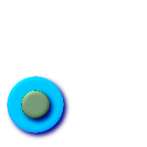

名前
ST_Within — ジオメトリAが完全にジオメトリBの内側にある場合にTRUEを返します．
概要
boolean ST_Within(geometry
A, geometry
B);
説明
ジオメトリAが完全にジオメトリBの内側にある場合にTRUEを返します．この関数が意味のあるものにするためには，元のジオメトリは同じ投影座標である，同じSRIDを持っている必要があります．ST_Within(A,B)がTRUEかつST_Within(B,A)がTRUEである場合には，二つのジオメトリは空間的に同じであると考えられます．
GEOSモジュールで実現しています．
![[重要項目]](images/important.png) | |
|
| |
この関数を不正なジオメトリで呼ばないでください．予期しない結果が返されます． |
この関数は，ジオメトリ上で使用可能なインデクスを使うバウンディングボックス比較を自動的に取り込みます．インデクスの使用を避けるには，_ST_Within関数を使います．
ご注意: これは論理値を返して整数を返さないのが「許される」版です．
 このメソッドは OpenGIS Simple Features Implementation Specification for SQL 1.1.を実装するものです． s2.1.1.2 // s2.1.13.3
- a.Relate(b, 'T*F**F***')
このメソッドは OpenGIS Simple Features Implementation Specification for SQL 1.1.を実装するものです． s2.1.1.2 // s2.1.13.3
- a.Relate(b, 'T*F**F***')
このメソッドはSQL/MM仕様の実装です． SQL-MM 3: 5.1.30
例
--円の中にある円
SELECT ST_Within(smallc,smallc) As smallinsmall,
ST_Within(smallc, bigc) As smallinbig,
ST_Within(bigc,smallc) As biginsmall,
ST_Within(ST_Union(smallc, bigc), bigc) as unioninbig,
ST_Within(bigc, ST_Union(smallc, bigc)) as biginunion,
ST_Equals(bigc, ST_Union(smallc, bigc)) as bigisunion
FROM
(
SELECT ST_Buffer(ST_GeomFromText('POINT(50 50)'), 20) As smallc,
ST_Buffer(ST_GeomFromText('POINT(50 50)'), 40) As bigc) As foo;
--Result
smallinsmall | smallinbig | biginsmall | unioninbig | biginunion | bigisunion
--------------+------------+------------+------------+------------+------------
t | t | f | t | t | t
(1 row)
